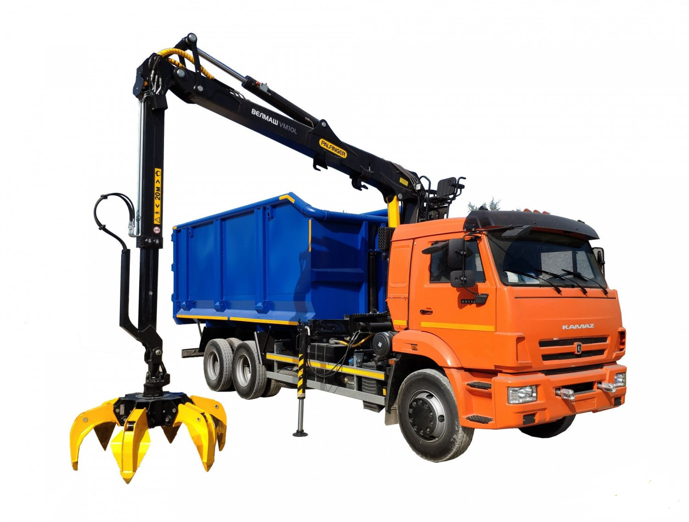
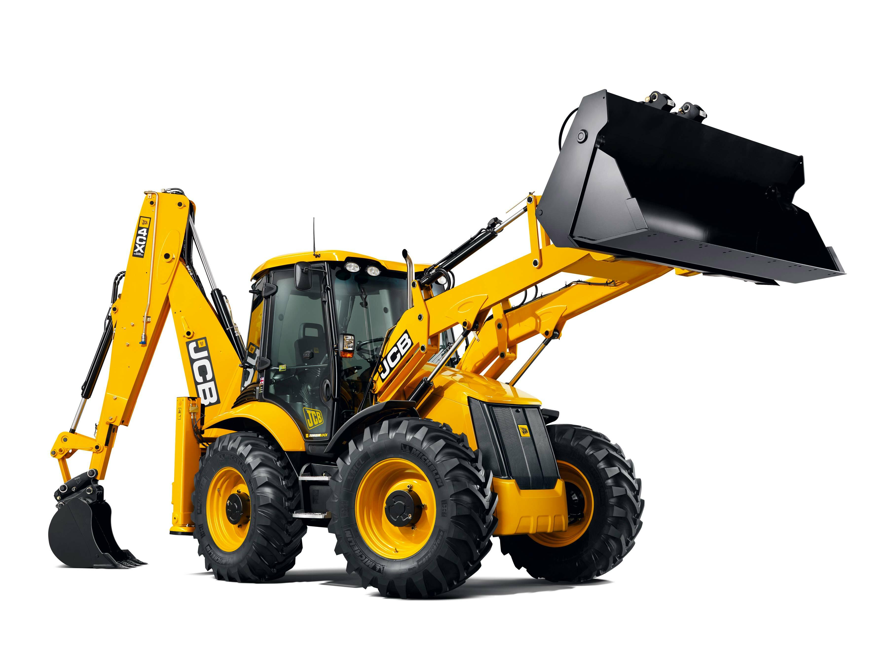

АРЕНДА СПЕЦТЕХНИКИ АРХАНГЕЛЬСК
Многие компании и физические лица предпочитают брать эту спецтехнику
внаем. Экскаватор-погрузчик поможет выполнить целый спектр
дорожно-строительных, ремонтных, коммунально-хозяйственных,
ландшафтных работ: погрузку/разгрузку, рытье траншей, укладку труб,
планировку и многое другое. При этом не требуется нести расходы на
покупку машины, ее обслуживание и содержание. Также не увеличиваются
налогооблагаемые активы предприятия. Прокат техники – это и гарантия
исправного технического состояния, высокого профессионального уровня
машинистов, соблюдения сроков.
Услуги ломовоза-вездехода КАМАЗ-43118 с КМУ VM10L74M
ЦЕНА 11000

У нас – только надежное оборудование в отличном техническом
состоянии, с помощью которого транспортировка металлолома будет
выполнена максимально просто и эффективно. Кроме того, с каждым
ломовозом мы готовы предоставить бригаду, - водителя и
грузчиков, - чтобы обеспечить комплексное решение задачи по
перемещению лома различных металлов.
Колесная формула: 6х4
Модель двигателя: КАМАЗ 740.705-300 (Е-5) или Cummins ISB6.7E5
300 (Е-5)
Грузоподъемность: 10650 Объем кузова, м3: 30
ГМУ: VM10L74M
Услуги экскаватора погрузчика jcb 4cx
ЦЕНА 9000

У нас – только надежное оборудование в отличном техническом
состоянии, с помощью которого транспортировка металлолома будет
выполнена максимально просто и эффективно. Кроме того, с каждым
ломовозом мы готовы предоставить бригаду, - водителя и
грузчиков, - чтобы обеспечить комплексное решение задачи по
перемещению лома различных металлов.
Колесная формула: 6х4
Модель двигателя: КАМАЗ 740.705-300 (Е-5) или Cummins ISB6.7E5
300 (Е-5)
Грузоподъемность: 10650 Объем кузова, м3: 30
ГМУ: VM10L74M